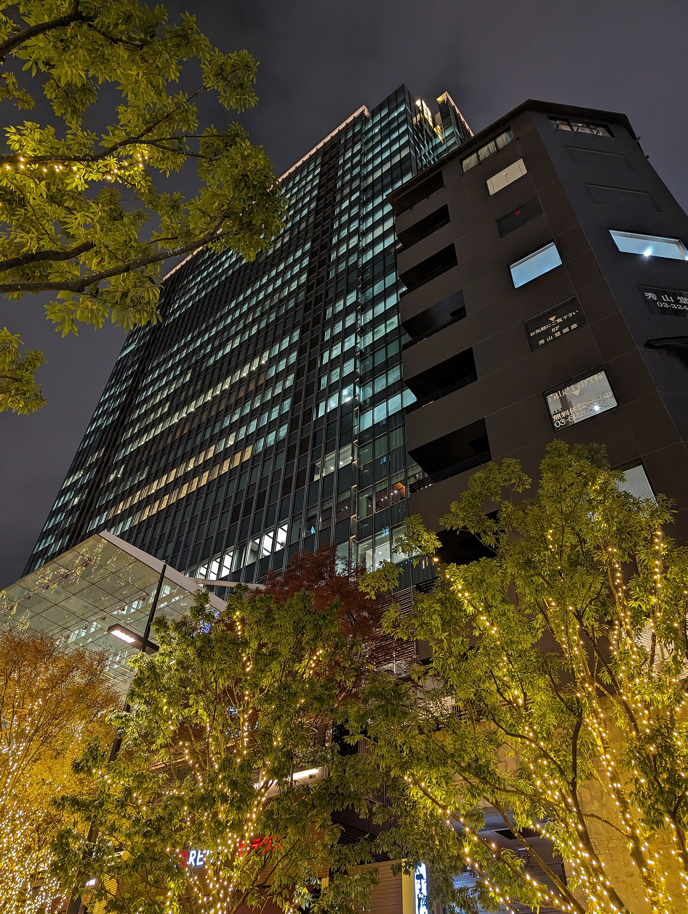

Заседание экономических комитетов Узбекистана и Японии в Ташкенте: портфель из 75 проектов на 12 млрд долларов
В 18-м заседании приняли участие более 130 японских участников. Приоритетные направления — энергетика, химия, машиностроение, критические минералы, здравоохранение и IT.

В Ташкенте прошло 18-е заседание комитетов по экономическому сотрудничеству Узбекистан — Япония и Япония — Узбекистан. На заседании был представлен портфель двусторонних проектов: 75 проектов общей стоимостью 12 млрд долларов.
Встречу возглавили с узбекской стороны министр инвестиций, промышленности и торговли Лазиз Кудратов, а с японской — председатель комитета Япония — Узбекистан, главный советник компании Mitsubishi Corporation Масаюки Танимото.
В мероприятии приняли участие представители крупных корпораций и организаций развития — всего более 130 японских участников.
Приоритетные направления
- Энергетика
- Химическая промышленность
- Машиностроение
- Критические минералы (редкие и стратегические металлы)
- Здравоохранение
- Информационные технологии
Направление критических минералов было выделено особо. Стороны обсудили вопрос перехода от экспорта сырья к производству продукции с высокой добавленной стоимостью — то есть переработке руды и концентрата внутри страны вместо их отправки за рубеж.
Почему критические минералы
Критические минералы — группа металлов, необходимых для аккумуляторов, полупроводников, электромобилей и оборонной промышленности. Поскольку цепочки их поставок сосредоточены в нескольких государствах, Япония, Южная Корея, США и Европейский союз в последние годы ищут альтернативные источники.
В этом контексте Центральная Азия оказалась в центре внимания. 14 сентября 2026 года в Сеуле был подписан четырёхсторонний меморандум между Азиатским банком развития, Экспортно-импортным банком Кореи, «Комбинатом технологических металлов Узбекистана» и Фондом реконструкции и развития Узбекистана.
Фон отношений с Японией
Япония считается одним из традиционных технологических партнёров Узбекистана. В стране за счёт средств Японского агентства международного сотрудничества (JICA) реализованы проекты в сферах энергетики, транспорта и здравоохранения.
В последние годы масштаб сотрудничества расширился: в декабре 2025 года в Токио состоялась встреча на уровне руководителей двух государств, завершившаяся расширением перечня экономических проектов.
Суть портфеля
Показатель в 12 млрд долларов — не сумма подписанных контрактов, а представленная общая стоимость портфеля проектов, находящихся на стадии переговоров и в разной степени готовности. В таких портфелях часть проектов обычно находится на этапе технико-экономического обоснования.
В официальных сообщениях структура финансирования, сроки и ответственные компании по каждому проекту полностью не раскрыты.
Контекст: инвестиционный поток
В течение 2026 года Узбекистан объявил несколько крупных инвестиционных инициатив: был создан Ташкентский международный финансовый центр, обнародован новый список приватизации государственных активов и введены мощности в возобновляемой энергетике.
История отношений с Японией
Япония с первых лет независимости Узбекистана была одним из крупных поставщиков технической помощи. За счёт средств Японского агентства международного сотрудничества (JICA) реализованы проекты в сферах энергетики, транспорта, водоснабжения и здравоохранения.
Важное место в сотрудничестве двух государств занимает и образовательное направление: программы направления студентов и стажёров из Узбекистана в Японию работают уже много лет.
В декабре 2025 года в Токио состоялась встреча на уровне руководителей двух государств, завершившаяся расширением перечня экономических проектов.
Глобальная конкуренция за критические минералы
Критические минералы — группа металлов, необходимых для аккумуляторов, полупроводников, электромобилей, ветровых турбин и оборонной промышленности. К ним относятся литий, кобальт, никель, вольфрам, молибден и редкоземельные элементы.
Добыча и особенно переработка этих материалов сосредоточена в мире в нескольких странах. В последние годы Япония, Южная Корея, США и Европейский союз объявили о политике расширения источников поставок.
В этих поисках Центральная Азия оказалась в центре внимания. В Узбекистане и Казахстане имеется ряд месторождений редких металлов; их перерабатывающие мощности при этом пока ограничены.
От сырья к готовой продукции
Одна из основных идей, обсуждавшихся на заседании, — переработка руды и концентрата внутри страны вместо их отправки за рубеж. Такой подход может повысить добавленную стоимость и создать квалифицированные рабочие места.
На практике такой переход требует крупных капиталовложений, передачи технологий и квалифицированных кадров. Поэтому подобные проекты обычно реализуются совместно с зарубежным партнёром.
Параллель с корейским направлением
В этот же период Южная Корея действовала в том же направлении. 14 сентября в Сеуле был подписан четырёхсторонний меморандум между Азиатским банком развития, Экспортно-импортным банком Кореи, «Комбинатом технологических металлов Узбекистана» и Фондом реконструкции и развития Узбекистана.
13–16 сентября президент Узбекистана совершил государственный визит в Южную Корею; в Сеуле были подписаны 13 документов. А 16–17 сентября в городе прошёл первый саммит «Центральная Азия — Корея».
О структуре портфеля
Показатель в 12 млрд долларов — не сумма подписанных контрактов, а представленная общая стоимость 75 проектов, находящихся в разной степени готовности. В таких портфелях часть проектов обычно находится на этапе технико-экономического обоснования.
В официальных сообщениях структура финансирования, сроки и ответственные компании по каждому проекту полностью не раскрыты. Поэтому стоимость портфеля следует читать скорее как показатель намерений, чем как точный прогноз будущего инвестиционного потока.
Инвестиционный фон
В течение 2026 года Узбекистан объявил несколько крупных экономических инициатив: был создан Ташкентский международный финансовый центр, государственные активы на 8 млрд долларов включены в список приватизации, а в энергетике до конца года запланирован ввод 6,7 ГВт новых мощностей.
Во внешней торговле страны первое место занимает Китай: в январе — июне 2026 года товарооборот составил 9,5 млрд долларов. Далее следуют Россия с 7 млрд и Казахстан с 2,8 млрд долларов.
Формат заседания
Комитеты по экономическому сотрудничеству — постоянная платформа, объединяющая представителей государства и бизнеса. Они обычно проводятся раз в год поочерёдно в двух странах и выполняют роль площадки для отчёта по текущим проектам и обсуждения новых инициатив.
Обычной практикой считается, что с японской стороны комитет возглавляют представители крупных торговых домов (сого сёся). Такие компании одновременно занимаются торговлей, инвестициями и управлением проектами.
Направления здравоохранения и IT
В перечень приоритетных направлений включены также здравоохранение и информационные технологии. Проекты по поставке медицинского оборудования и модернизации больниц в Узбекистане и ранее реализовывались при японском финансировании.
По направлению IT страна в последние годы проводит политику стимулирования экспорта программного обеспечения; через систему IT-парка предоставляются налоговые льготы и инфраструктура.
Наряду с этим существует план добавить в энергосистему страны до конца 2026 года 6,7 ГВт новых мощностей; в его составе указаны 2,8 ГВт солнечных, 2,5 ГВт тепловых, 884 МВт накопителей энергии, 470 МВт ветровых и 68 МВт гидроэнергетических мощностей.